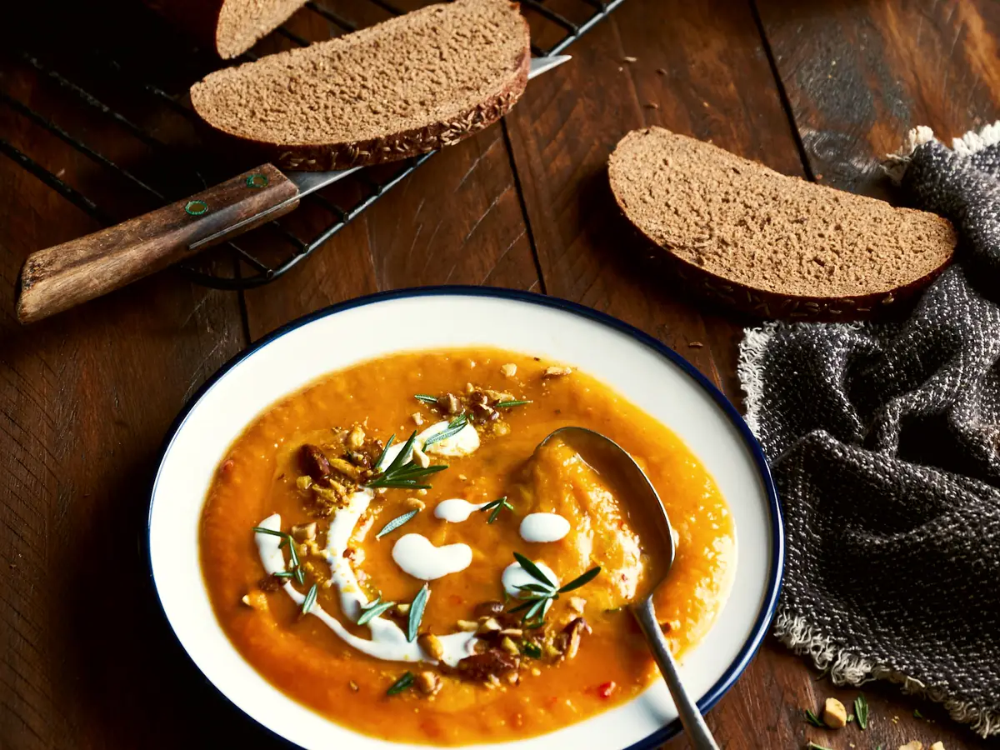
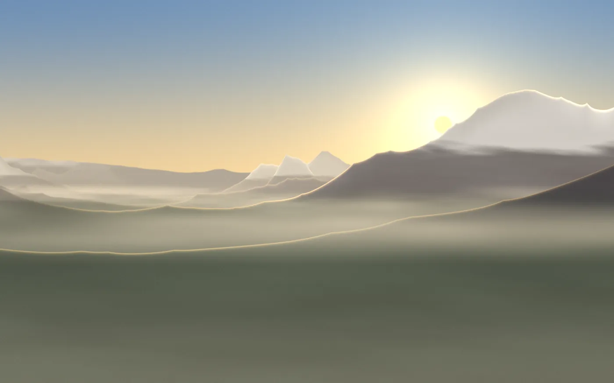
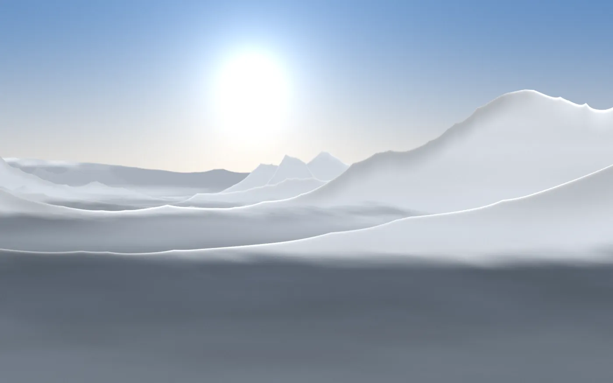
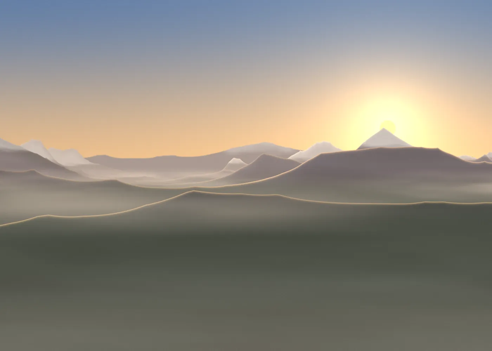

Dormir à 2 140 m, au-dessus de la brume.
Un refuge gardé de 30 lits en Belledonne, à 2 h 30 de marche du parking. Demi-pension dès 58 €.
Voir les dates libresLa route s'arrête. Le sentier commence.
- altitude
- 2 140 m
- de montée
- 760 m
- de marche l'été
- 2 h 30
- lits
- 30
Un jour de juillet, du lever au coucher
6 h 15
Le soleil touche d'abord la Croix de Vire. Café sur la terrasse, en doudoune.
12 h 30
Pique-nique du refuge au lac des Fées, commandé la veille.
19 h 00
Soupe à la grande table. Dehors, la crête commence à dorer.
21 h 20
Le soleil passe derrière la Chartreuse. Tout le monde sort le regarder.
Quatre façons de dormir là-haut
Couettes fournies partout, draps en chambre. Prix par personne et par nuit.

Ce soir à la grande table
L'hélicoptère monte les réserves en juin, le reste arrive à pied : légumes du Grésivaudan, tomme d'alpage, pain de Revel.
Demi-pension : dîner, nuit et petit-déjeuner. Végétarien sur demande.


Le même sentier, deux saisons


- Été, à pied
- Du 13 juin au 20 septembre, gardé tous les soirs.
- Hiver, en raquettes
- Du 19 décembre au 12 avril, week-ends et vacances. Raquettes prêtées ; l'avant-veille, Margaux vous dit la neige et le risque d'avalanche.
De la réservation au premier soir
- 1
Vous choisissez vos dates. 30 % d'arrhes, le reste au refuge.
- 2
L'avant-veille, Margaux vous écrit la météo et l'état du sentier.
- 3
Départ du Pré Long : 2 h 30 l'été, 3 h 30 en raquettes.
- 4
Arrivée avant 18 h. Chaussures à l'entrée, chaussons fournis.
Ils sont redescendus contents
4,8 / 5 · 312 avis
« Le lever de soleil depuis la terrasse valait les 760 mètres. La tarte aux myrtilles aussi. »
Léa et Tom, Grenoble · août
« Quatorze au dortoir, aucun ronfleur oublié : Bastien prête des bouchons d'oreilles. »
Club alpin de Voiron · juillet
« Première sortie en raquettes à 61 ans. Margaux m'a attendue au dernier lacet. »
Hélène, Chambéry · février

Margaux et Bastien gardent la Vire depuis 2016
Elle est accompagnatrice en montagne, lui cuisinier. De juin à avril, ils vivent là-haut et montent le pain à pied deux fois par semaine.
Choisissez vos dates
Les lits libres se mettent à jour chaque soir. Le nombre de places est écrit dans chaque case.
Total 0 €
Avant de monter
Faut-il être sportif ?
Non. L'été, un bon marcheur monte en 2 h 30, les enfants dès 7 ans en 3 h. Comptez 3 h 30 en raquettes.
Que mettre dans le sac ?
Frontale, doudoune, gourde et sac à viande pour le dortoir. La liste complète arrive avec la confirmation.
Et si la météo tourne ?
Si le refuge déconseille la montée, on reporte ou on rembourse les arrhes.
Y a-t-il une douche ?
Une douche chaude à jetons, 3 €. L'eau vient de la source, on la ménage ; toilettes sèches à chaque étage.
Les chiens sont-ils acceptés ?
Oui en été, tenus en laisse et sans accès aux chambres.